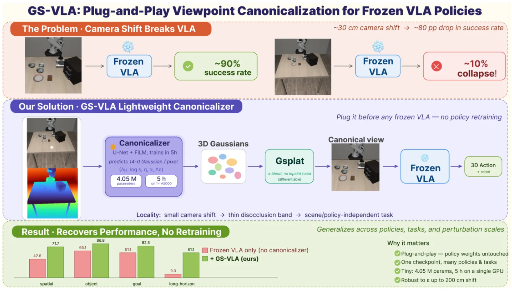
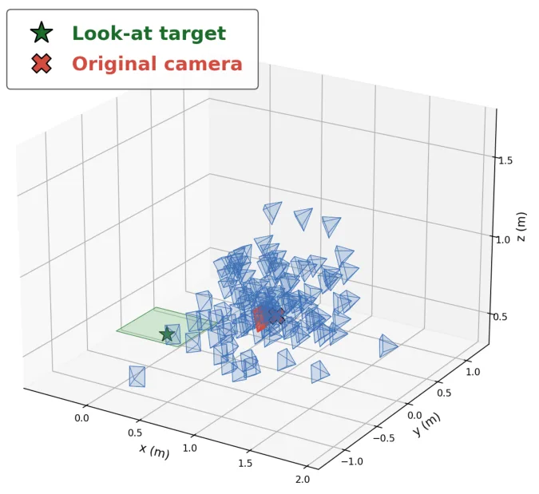
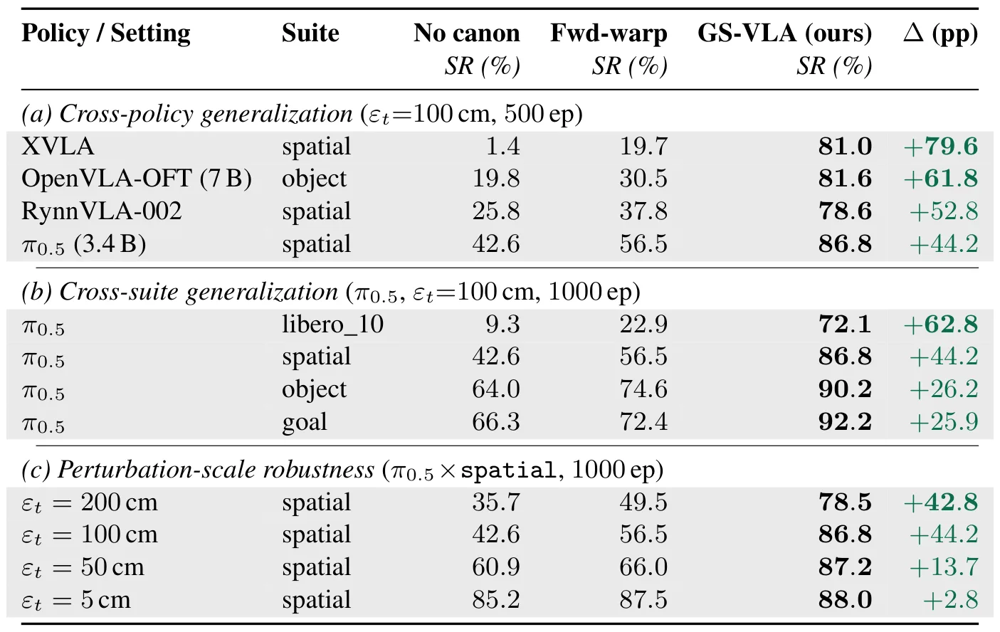
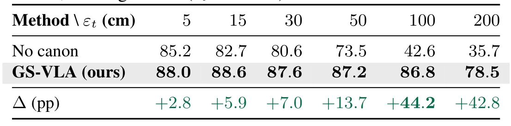
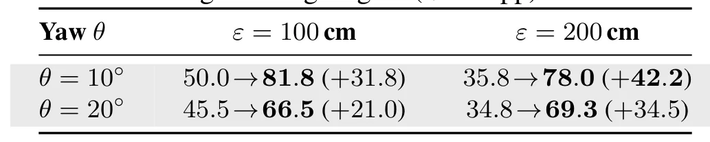
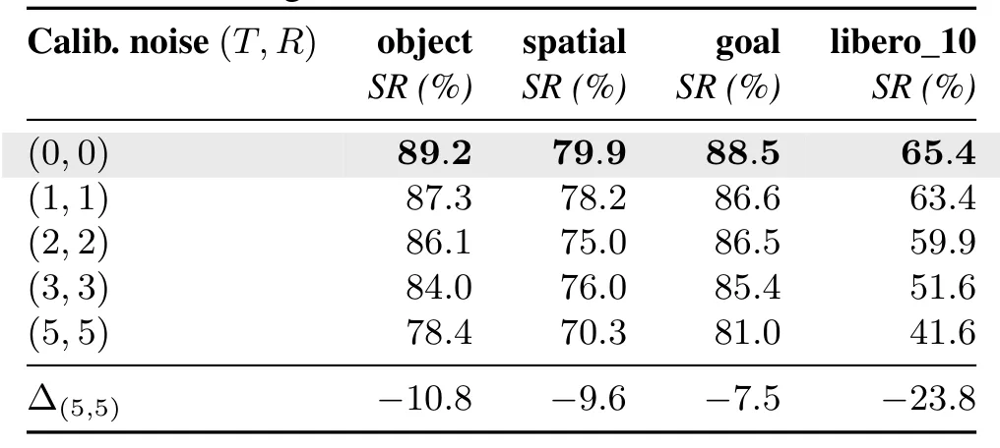

GS-VLA：通过 Gaussian Splatting 为冻结 VLA 策略提供即插即用的视点规范化GS-VLA: Plug-and-Play Viewpoint Canonicalization for Frozen VLA Policies via Gaussian Splatting
方法轻量且明确利用 3DGS 解决观测域视点偏移，对机器人视觉部署有直接启发；但核心目标是 VLA 鲁棒性而非 SLAM/定位，局部性假设和实际时延仍需核验。
一句话工作总结
用轻量 3DGS 观测模块校正相机视点变化，不改动冻结的 VLA 策略参数。
摘要
GS-VLA 面向相机安装位置变化导致的 VLA 策略性能下降问题，在不重新训练策略的前提下，将视点扰动重写为局部新视图合成，并使用一个 400 万参数的 3D Gaussian canonicalizer 对观测进行规范化，再接入冻结的 VLA 策略。作者在 LIBERO 等实验中从策略架构、未见任务套件和扰动尺度三个维度报告了鲁棒性提升。该方法的关键假设是相机扰动相对于工作空间处于较小的局部范围，因而主要处理局部遮挡/显露问题。
This paper proposes a lightweight, plug-and-play framework that improves robustness to viewpoint shifts in Vision-Language-Action (VLA) policies without policy retraining. To our knowledge, this is the first approach to directly leverage 3D Gaussian-based novel-view synthesis for observation-space adaptation in VLA policies. Current VLA performance relies on the implicit assumption that training and deployment camera configurations are identical. Our experiments show that even a small displacement of the camera mount can reduce the success rate on the LIBERO benchmark from about 90% to about 10% in the worst case. Prior approaches, such as large-scale fine-tuning or generative data augmentation, are computationally expensive and risk catastrophic forgetting. To address this, viewpoint shifts are reformulated as a localized novel-view synthesis problem. Under a Locality assumption, that camera perturbations remain within a small bounded region relative to the workspace, viewpoint normalization reduces to a scene- and policy-independent disocclusion task. Our work implements this idea with a 4M-parameter 3D-Gaussian canonicalizer prepended to a frozen VLA policy. Without modifying policy weights, GS-VLA improves performance across three orthogonal axes: (1) Policy architectures, (2) Unseen task suites, and (3) Perturbation scales. These results show that a lightweight visual module can recover a large fraction of the performance lost under viewpoint shift, without policy retraining.
中文解读摘录
- 论文：arXiv:2608.19066 · PDF
- 作者：Yechan Park, HyunJin Kim
- 核心方法：用 400 万参数的 3D Gaussian canonicalizer 将局部相机视点扰动转化为观测空间的新视图合成，再接入冻结的 VLA 策略，不修改策略权重。
- 判断：虽然主要不是 SLAM，但对机器人相机安装偏差和观测域适配具有启发。关键风险是局部性假设、遮挡显露区域的真实性、端到端延迟，以及是否会把几何重建误差传给策略。
- 评分：8.5/10。
图表/页面预览
{kind=link}

{kind=link}

{kind=link}

{kind=link}

{kind=link}

{kind=link}
